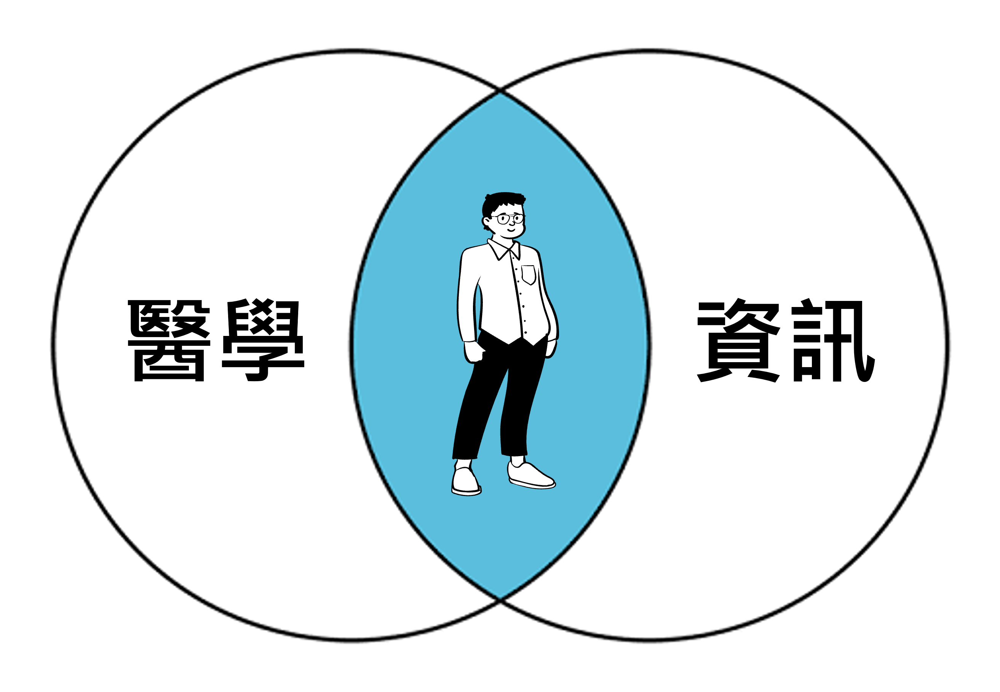

個人簡介和申請動機
個人簡介：

大家好，我叫蘇鈺翔。在碩士班的時候，我發現自己對醫學資訊有著極大的熱忱。當模型跑出結果時，那種滿懷期待的感覺，就像打開潘朵拉的寶盒，既刺激又興奮。然而，我也意識到自己的盲點，對於醫學機轉的理解仍存在不足，看了很多文獻後仍需請教醫生來解惑。
由於醫生能夠理解並向我解釋這些機轉，這使我相信醫學系的訓練一定能滿足我的好奇和困惑。因此，我就去報考學士後醫學系，但可惜未能如願。在經歷了兩年的考試生活後，我發現若繼續考試，可能只會更加擅長國英生化，而無法累積其他經驗。路越走越窄，跟社會越來越脫節，同時考量到自己不可能成為補習班老師或僅做研究助理一輩子，再加上研究助理是無法累積年資的，因此我意識到需要為自己開創一條新的道路。
於是我果斷轉換跑道，選擇了後端工程師這條路。我規劃先專注於資訊領域，深入學習程式語言，並完成一些個人專案，以拓展自己的職業道路。幾年後如果有機會，我希望能結合過去的數據分析經驗，進一步深入研究，並在未來攻讀與深度學習應用於醫療領域相關的碩士或博士學位。
由於醫生能夠理解並向我解釋這些機轉，這使我相信醫學系的訓練一定能滿足我的好奇和困惑。因此，我就去報考學士後醫學系，但可惜未能如願。在經歷了兩年的考試生活後，我發現若繼續考試，可能只會更加擅長國英生化，而無法累積其他經驗。路越走越窄，跟社會越來越脫節，同時考量到自己不可能成為補習班老師或僅做研究助理一輩子，再加上研究助理是無法累積年資的，因此我意識到需要為自己開創一條新的道路。
於是我果斷轉換跑道，選擇了後端工程師這條路。我規劃先專注於資訊領域，深入學習程式語言，並完成一些個人專案，以拓展自己的職業道路。幾年後如果有機會，我希望能結合過去的數據分析經驗，進一步深入研究，並在未來攻讀與深度學習應用於醫療領域相關的碩士或博士學位。
申請動機：
在碩班時候，因為SAS需要寫程式才能執行，那時候是我第一次接觸撰寫程式碼，接觸後發現自己對程式非但不排斥，甚至還有過度的執著，當程式碼沒辦法RUN的時候會一直想找出原因，會跟實驗室的同學每天奮戰到深夜，就為了找出答案，那個時候還沒有GPT可以使用，我甚至還為了找答案不惜晚上去修來自健保署的老師開的課程，就為找到適合我資料所用的模型以及程式碼的使用，下課也會拖著老師一直問有關BUG的問題和釐清程式碼背後的涵義。隨著時間的累積，在這過程中我就發現我對寫程式很有興趣，會開始期待每按一次RUN就可以執行的那種成就，甚至會跟同學一起研究程式碼的各種可能性。
然而在過去考試的日子裡，我經常使用 阿摩線上測驗平台 進行刷題測試。這個平台的使用體驗讓我感到有些混亂，因為同一科目的考試存在許多冗餘資料。故我打算設計一個使用體驗更佳的線上測驗網站，並且融合主線任務和支線任務概念一步一腳印成長，最後結合企業媒合的概念進行match配對，幫助未來的考生或是想轉換跑道但不知道從何起手的人，可以順利實現夢想。 因此我希望能參加營隊，在有指導老師的帶領下逐步學習並獨立完成這個專案，最後進行發表(上架)。
我之所以選擇Wehelp，最主要原因是教學方式跟我教授指導方式一樣：每週一早上10 點的開會和指引當週任務以及報告進度。而我在這樣的訓練下最後得以投稿到SCI期刊，可以說是稍微超越碩士該有的範疇，因為只是要畢業的話並沒有要求要投稿，但我希望做事在條件允許的情況下，有始有終，且要做就做到最好，也就是盡人事聽天命。 後來發現在這過程中收穫最多的並不是那篇期刊，而是這整個過程，我從一開始跌跌撞撞的自我探討思考，提出問題，發現問題，找到資源和答案並且解決問題，這才是讓我未來出社會能夠獨立作業的能力。
然而在過去考試的日子裡，我經常使用 阿摩線上測驗平台 進行刷題測試。這個平台的使用體驗讓我感到有些混亂，因為同一科目的考試存在許多冗餘資料。故我打算設計一個使用體驗更佳的線上測驗網站，並且融合主線任務和支線任務概念一步一腳印成長，最後結合企業媒合的概念進行match配對，幫助未來的考生或是想轉換跑道但不知道從何起手的人，可以順利實現夢想。 因此我希望能參加營隊，在有指導老師的帶領下逐步學習並獨立完成這個專案，最後進行發表(上架)。
我之所以選擇Wehelp，最主要原因是教學方式跟我教授指導方式一樣：每週一早上10 點的開會和指引當週任務以及報告進度。而我在這樣的訓練下最後得以投稿到SCI期刊，可以說是稍微超越碩士該有的範疇，因為只是要畢業的話並沒有要求要投稿，但我希望做事在條件允許的情況下，有始有終，且要做就做到最好，也就是盡人事聽天命。 後來發現在這過程中收穫最多的並不是那篇期刊，而是這整個過程，我從一開始跌跌撞撞的自我探討思考，提出問題，發現問題，找到資源和答案並且解決問題，這才是讓我未來出社會能夠獨立作業的能力。
最後，有看到彭彭老師分享各屆的專案和團體合照，讓我感受到共同奮戰的喜悅。使我更加堅定這個選擇，也期許自己在這樣的訓練下能做出最好的作品。